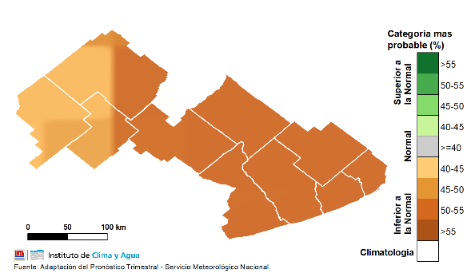
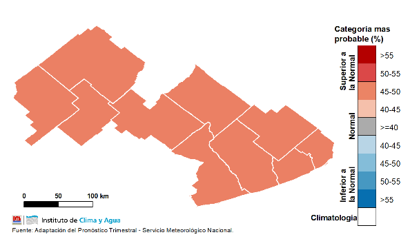

Pronóstico trimestral


La última actualización del pronóstico climático trimestral por consenso realizado por el Servicio Meteorológico Nacional (SMN) e Instituciones Nacionales (incluida INTA), indica para el próximo trimestre mayor probabilidad de ocurrencia de lluvias inferiores a las normales sobre toda la región, con una probabilidad mayor al 45%. Particularmente, en centro y sudeste de la región ésta probabilidad será mayor al 55%
En cuanto a las temperaturas medias, la tendencia climática trimestral prevé valores superiores a los normales para la época. Sobre gran parte del centro del país no se descarta una mayor frecuencia de temperaturas máximas extremadamente altas.
Estado actualizado de los principales cultivos
Campaña fina
Los cultivos de trigo y cebada transitaron el mes de septiembre acompañados con un escaso régimen de lluvias y bajas temperaturas en la mayor parte del territorio de la EEA
INTA Balcarce. El estado de desarrollo en los lotes relevados varió entre primera y segunda hoja desarrollada (Z1.1/1.2 Escala Zadocks) en los cultivos sembrados a fin
de julio o principios de agosto, y entre inicio y pleno de macollaje (Z2.2 Escala Zadocks) en los de siembras tempranas. En éstos últimos se observó un retraso en su
desarrollo, ya que se esperaría que se encuentren en fin de macollaje en esta época del año en la región.
En cuanto al estado sanitario de los cultivos, no se observó presencia de enfermedades en general. En algunos lotes se observaron manchas de fitotoxicidad producto de daño
por herbicidas o de algún otro factor abiótico. Tampoco se observó la presencia de plagas.
Pastizales y pasturas
Durante el mes de septiembre las bajas temperatura y las escasas precipitaciones en la mayor parte del territorio no lograron compensar la falta de stock forrajero en la
mayoría de los sistemas pastoriles del territorio de la EEA INTA Balcarce.